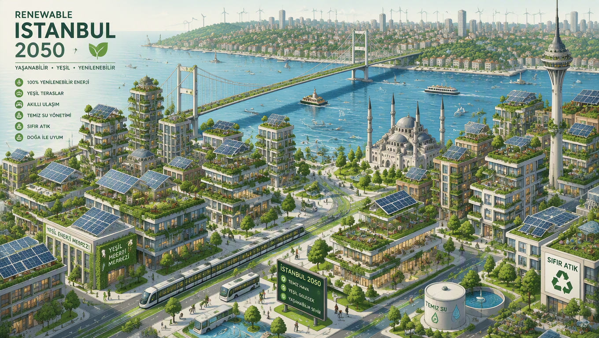
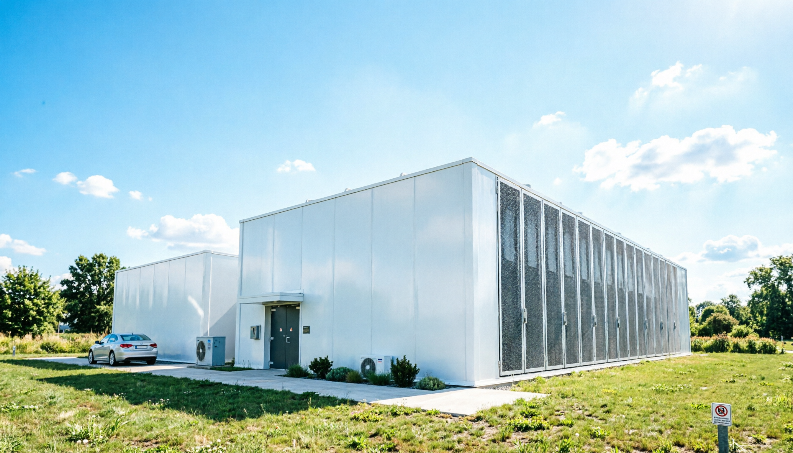
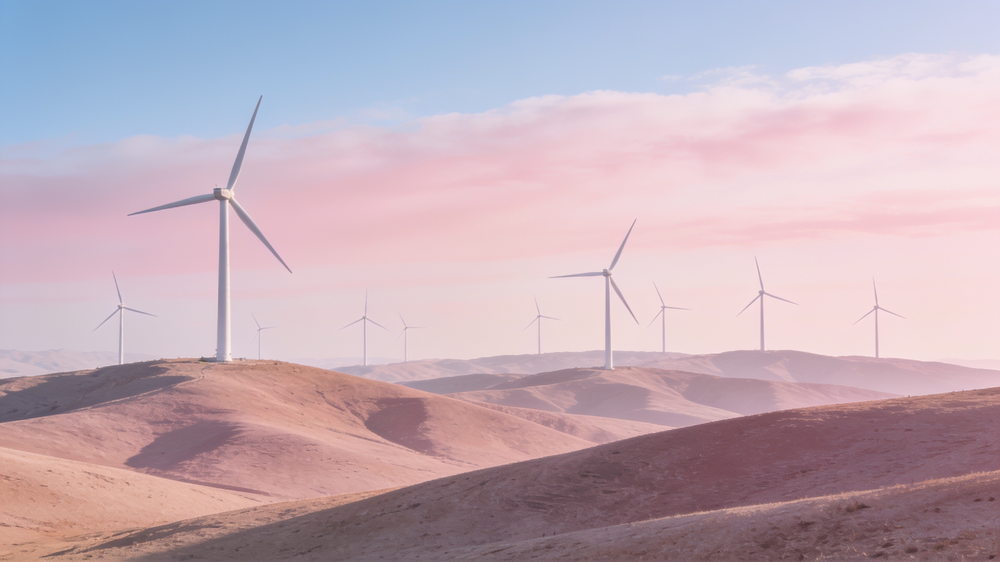
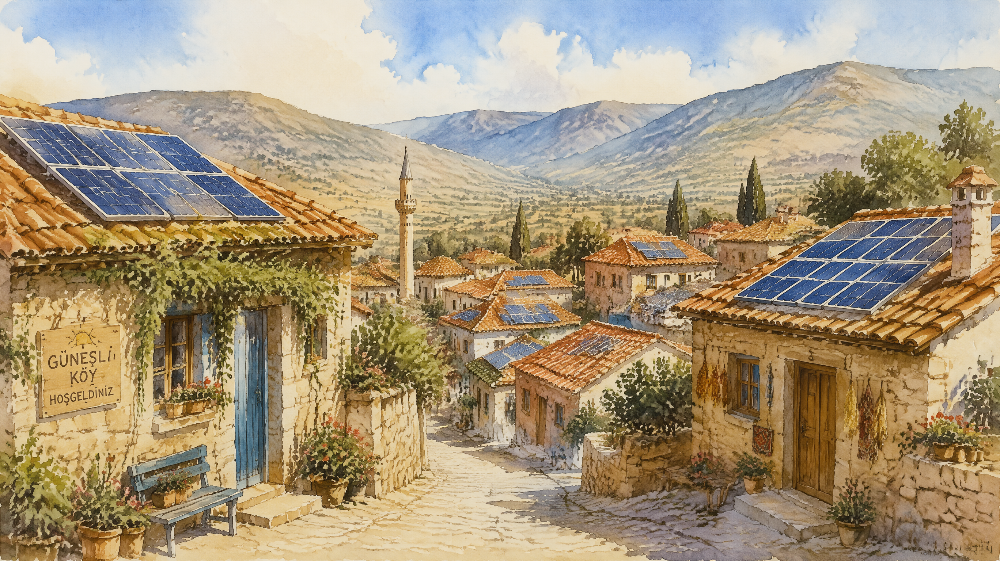
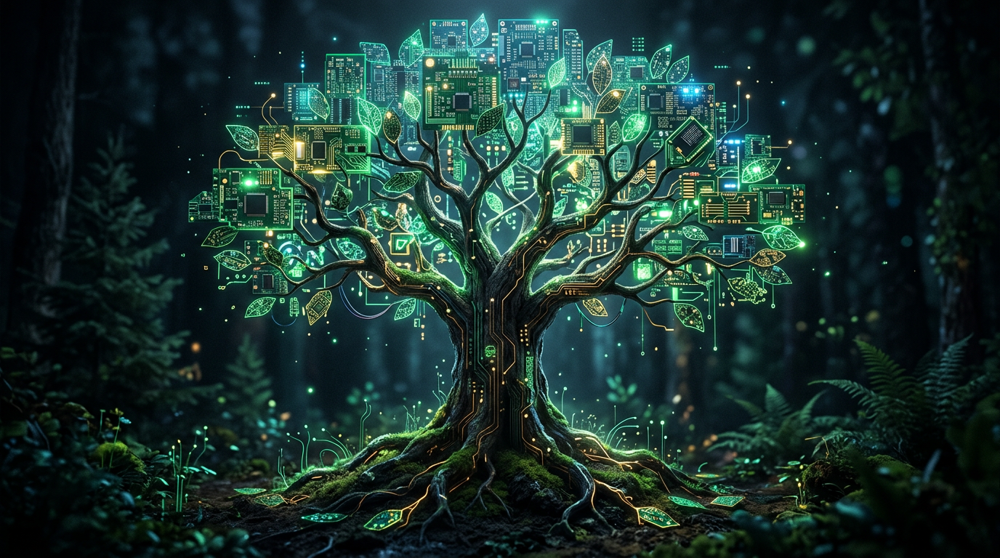

Yeşil Prompt
Resim Galerisi

Yenilenebilir İstanbul, 2050
👤 H.N.Çetinkaya
🧩 GPT Image 2

Yeşil Veri Merkezi
🧩 Qwen Image 2.0
Suyu Koruyan Şehir
🧩 Creen AI 2.0

Rüzgâr Tarlaları
🧩 Seedream 4.5

Güneşli Köy
🧩 GPT Image 2

Orman ve Devre
🧩 Nano Banana 2
Atölyeye gir